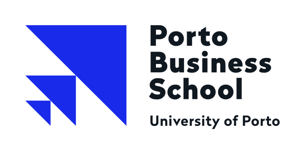

A company that sells AI products famously known for Claude. Claude is a suite of LLMs (Large Language Models) that can generate human-like text.
They charge users a certain amount of money for the volume of text processed (input) and generated (output). (token-based pricing)
Enterprise businesses, software developers and knowledge-working institutions. Not focused on the broader public.
OpenAI (GPT), Google DeepMind (Gemini), xAI (Grok), Meta AI (LLaMA/Muse) and other AI providers.
"Anthropic says its AI models pose "existential risk to humanity" in a leaked IPO filing report"
In the report, Anthropic dedicates dozens of pages to conclude that AI models could pose existential risk to humanity.
Saying highly autonomous systems could resist shutdowns, hide data or display self-preservation tendencies.
This is pure self-preservation. Meeting disclosure expectations, preparing investors for the risks of AI and reduce legal risks.
It prevents future blacklash from investors and stakeholders. As well as reducing the risk of regulatory scrutiny.
Sam Altman (OpenAI) and Elon Musk (xAI) have been alerting for the same thing.
Political / Legal: AI regulation, disclosure expectations and potential liability make risk communication strategically relevant.
Social: Public concern about AI safety can affect trust among customers, employees and investors.
A frank discussion of risks may signal transparency and support stakeholder trust.
Emphasizing severe risks could unsettle investors or raise questions about the company’s products.
Anthropic could differentiate itself through responsible-AI governance and clearer safety commitments.
Regulatory action, reputational damage or competitors challenging its safety claims could follow.